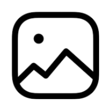
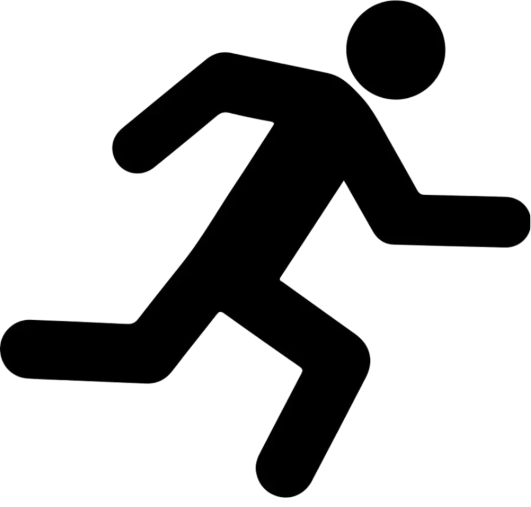

|  | |
 |
Ahoj, vítej na mé první webovce, já jsem Michal Dvořák, narodil jsem se
27. 4. 2009 v Brně.
Také rád sportuji. O tom, jaké sporty dělám, se můžete dozvědět na stránce Sporty. Na základní školu jsem chodil do Pustiměře, což je zároveň vesnice, kde bydlím.
Teď chodím na střední školu do Brna na SŠTE Olomouckou.